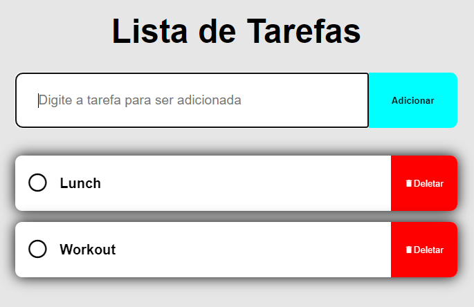
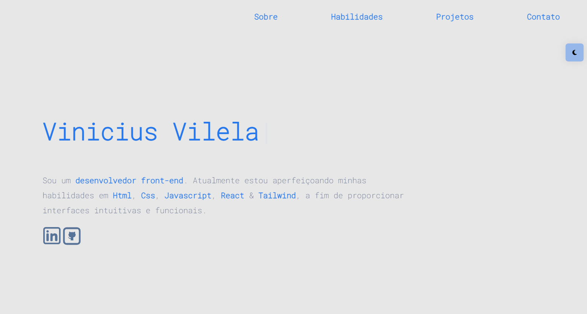

Projetos

Lista de Tarefas
Neste site é possivel criar uma lista de afazeres do dia para ter um controle sobre suas tarefas. Nele você pode adicionar tarefas, marcar como concluidas e tambem excluir as tarefas adicionadas.
Javascript
HTML
CSS
Netflix Landing Page Clone
Este é um projeto que tive como objetivo recriar a Landing Page da Netflix, no qual foquei da criação mais fiel possivel ao site original com toda a responsividade para diferente tamanhos de tela.
HTML
CSS
JAVASCRIPT

Portfolio
Site criado com design responsivo, modo escuro e intuitivo, para divulgar meus projetos e falar um pouco sobre mim.
Javascript
HTML
CSS

Agência Digital
O site em questão foi idealizado para ser uma landing page para uma agência digital. O site foi criado com HTML e CSS puro. O design é responsivo!
HTML
CSS